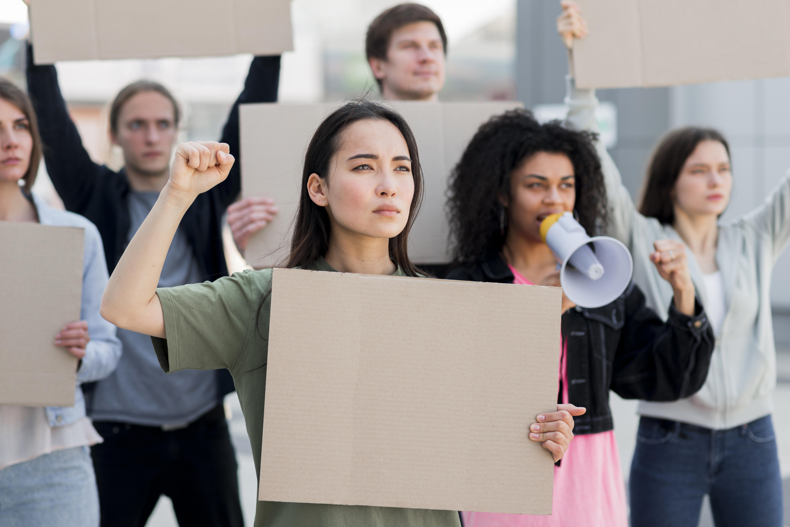
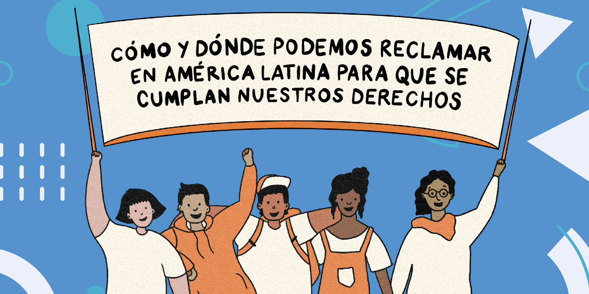
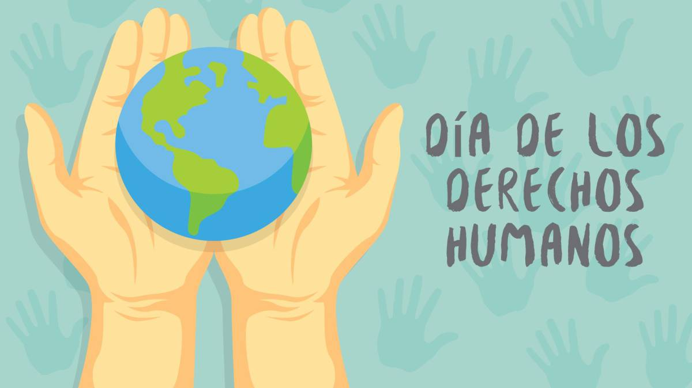
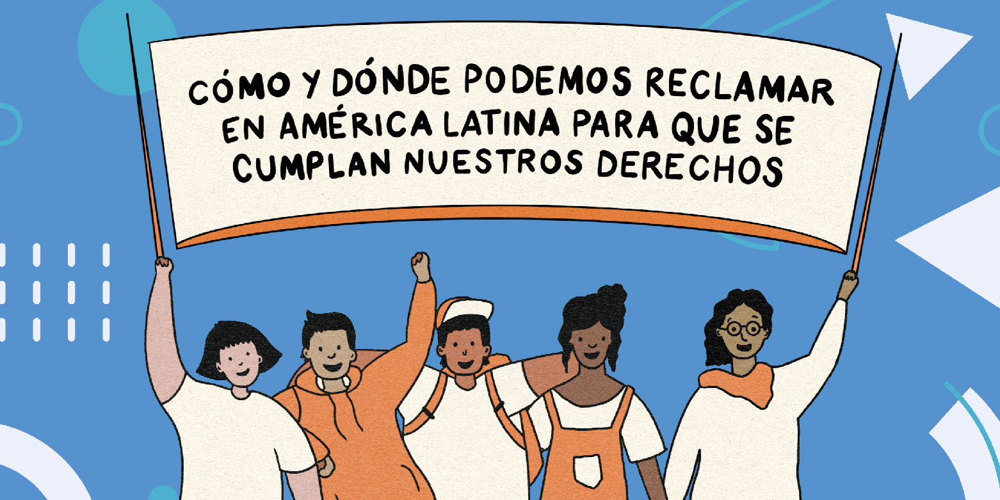
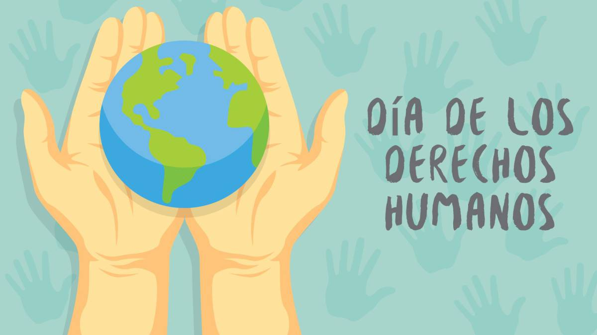

Marco Legal de los Derechos Humanos en la Educación
Este marco incluye normas nacionales e internacionales que garantizan una educación inclusiva, equitativa, libre de discriminación y orientada al desarrollo integral de cada estudiante.
G & G






1. Marco Nacional
Constitución de la República de El Salvador
- Artículo 53: Reconoce el derecho de toda persona a recibir educación.
- Artículo 56: Declara gratuita la educación impartida por el Estado.
- La educación debe contribuir a la formación integral del ser humano, inculcando respeto a los derechos humanos.
Ver Constitución de la republica (PDF)
Ley de Protección Integral de la Niñez y Adolescencia (LEPINA)
- Artículo 35: Derecho a la educación de calidad sin discriminación.
- Obliga al Estado, familias y sociedad a garantizar el acceso a la educación.
- Promueve la participación de niños y adolescentes en la vida escolar.
2. Instrumentos Internacionales ratificados por El Salvador
Declaración Universal de los Derechos Humanos (1948)
- Artículo 26: Toda persona tiene derecho a la educación, que debe ser gratuita en su nivel elemental.
Convención sobre los Derechos del Niño (1989)
- Firmada y ratificada por El Salvador.
- Reconoce el derecho a una educación que promueva el desarrollo integral y los valores de derechos humanos.
Agenda 2030 – Objetivo de Desarrollo Sostenible 4 (ODS 4)
- Compromiso internacional asumido por El Salvador.
- Busca garantizar una educación inclusiva, equitativa y de calidad para todos.
Estrategias pedagógicas:
- Análisis de casos reales: Presentar situaciones donde se respetan o violan derechos y discutirlas.
- Mapa legal interactivo: Crear un mapa en clase con las leyes locales e internacionales que protegen los derechos